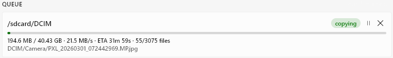
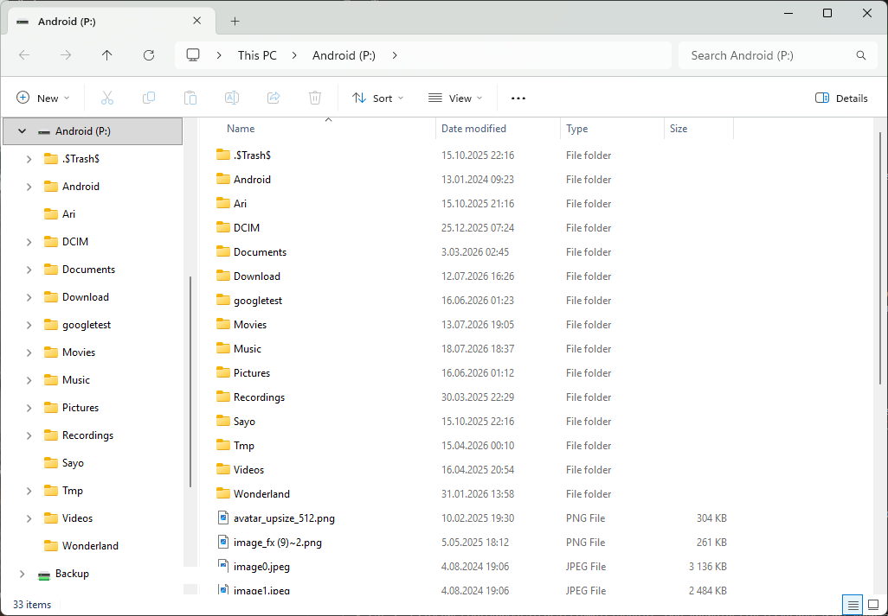
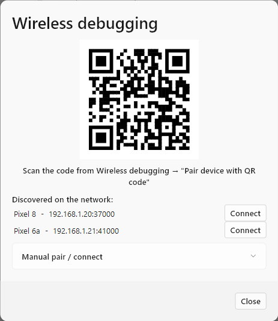
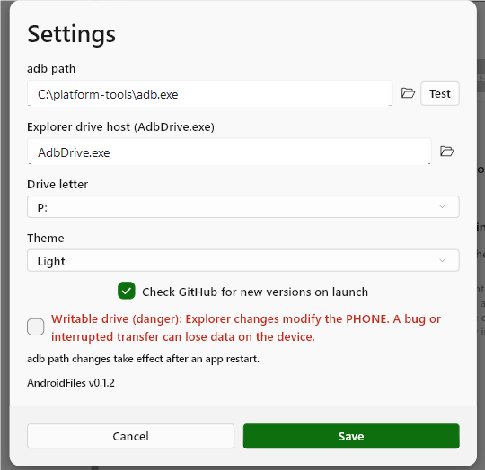

AndroidFiles — User Guide
Everything the app does, and exactly how to do it.
AndroidFiles backs up your Android phone to your Windows PC over ADB — the same channel developer tools use — instead of MTP (the "phone appears in Explorer" method that stalls on big folders). This guide walks through each feature in the order you'll meet them.
Before you start
Two one-time steps get a phone talking to the app:
- Install AndroidFiles. Download
AndroidFiles-win-Setup.exefrom the releases page and run it. It installs per-user with no admin prompt and keeps itself up to date. (Prefer no installer? The portable ZIP on the same page runs from any folder.) - Turn on USB debugging. On the phone, open Settings → About phone and tap Build number seven times to unlock Developer options, then enable Developer options → USB debugging. Plug the phone in and tap Allow on the "Allow USB debugging?" prompt.
Your first backup
The app opens with a folder tree on the left and a backup panel on the right, and shows a three-step checklist until you've done a run. Here's the window at a glance — the numbers match the steps below it:
 1
2
3
4
5
6
1
2
3
4
5
6
- 1 Device picker — choose the connected phone (USB or Wi-Fi)
- 2 Folder tree — tick the folders to back up
- 3 Destination — the folder on your PC to store the backup
- 4 Layout & Incremental — Mirror/Snapshot, and skip-unchanged
- 5 Back up — start the run (label updates once folders are ticked)
- 6 Toolbar — refresh, mount drive, Wi-Fi, log, and Settings
- Select your device. Once the phone is connected and authorized, it appears in the device picker at the top. USB and wireless devices are marked with their own icons.
- Tick the folders to back up in the tree on the left —
for example
/sdcard/DCIM,/sdcard/Download, or whole/sdcard. Use the Refresh button in the toolbar if the tree looks stale. - Choose a destination folder on your PC in the Destination box (or the folder-picker beside it), then press Back up.
Each selection becomes a job in the queue on the right, with live progress, transfer speed, and an ETA. That's the whole loop — everything below refines it.
⚡Fast, streamed transfers
This is the reason the app exists, and it needs no configuration. Instead
of copying file-by-file the way MTP does, AndroidFiles has the phone pack
each folder into a single continuous tar stream
(adb exec-out tar) and pipes it straight to your PC. There are
no per-file round-trips, so large folders move at full USB-link speed where
MTP crawls or gives up.

1 2 3- 1 Status & controls — “copying”, with pause and cancel
- 2 Live progress — transferred / total, speed, ETA, file count
- 3 Current file — what's streaming right now
- Progress, speed & ETA update live for the running job.
- Pause / resume a running job from its row in the queue.
- A cancelled run never leaves partial files behind.
- Filenames with non-ASCII characters land correctly — extraction is done
natively rather than through Windows'
bsdtar, which mangles UTF-8 names.
♻️Incremental re-runs
Leave Incremental (skip unchanged) ticked (it's on by default) and each re-run transfers only what actually changed. AndroidFiles compares a size + modified-time manifest of the phone against what's already on disk and moves just the differences.
In practice an untouched 50 GB photo library re-verifies in seconds and transfers 0 bytes — so running a backup often is cheap. Untick the box only if you want to force a full re-copy.
🧹Skip clutter
Tick Skip clutter (next to Incremental — off by default) to leave regenerable caches and system cruft out of the backup. Skipped files never leave the phone, so it saves transfer time, not just disk. The count shows as "N ignored" during and after a run.
The default list — editable under Settings → Backups
— covers .thumbnails, .trashed-*,
LOST.DIR, .thumbdata*, and
Android/data / Android/obb (per-app caches and
expansion files, often unreadable anyway). Patterns match any path segment,
case-insensitively, with * and ? as wildcards, so
.thumbnails skips that folder wherever it appears.
🕘Mirror & Snapshot layouts
The layout dropdown next to the Back up controls chooses how runs are stored:
- Mirror — keeps one up-to-date copy in the destination. Each run updates that single copy. Best when you just want "a current backup."
- Snapshot — creates a new dated folder for every run, so you can go back to how things looked on any date. Unchanged files are NTFS-hardlinked to the previous snapshot, so months of history cost almost no extra disk space — only changed files take new bytes.
✅Verification
AndroidFiles checks that a backup actually landed:
- Every run verifies that the file count on disk matches the phone before it's marked complete.
- For a stronger guarantee, use Deep verify on a finished
job (the button on its queue row) to compare the
md5of every file on both sides. It's thorough and therefore slow — reach for it when correctness matters more than time. It shows live progress and an ETA while it hashes the phone and re-reads the local copy. - To run that check automatically, tick Verify after backup in Options — every run is then deep-verified as soon as it finishes.
🗂️The Explorer drive
Beyond backups, you can mount the phone as a real Windows drive letter and
browse it in File Explorer. Click the drive icon in the
toolbar to mount; the phone's storage appears at the configured letter
(P: by default) and opens in a File Explorer window. Click the
icon again to unmount.

1 2- 1 Mounted as a drive — the phone appears at
P:in “This PC” - 2 Browse & copy — its folders behave like any drive in Explorer
- Read-only by default — browse and copy files off the phone safely.
- Writable mode is opt-in under Settings and clearly marked as risky.
↩️Restoring files
To push files back onto the phone, drag them from Explorer and drop them onto the AndroidFiles window. A dialog asks which folder on the device to place them in (defaulting to a sensible target), and warns that existing files with the same names will be overwritten. Confirm with Push.
💾Profiles & scheduling
Once you've picked a good set of folders, save it so you never have to re-tick them:
- With folders selected, use Save profile in the PROFILE section and give it a name.
- Later, pick it from Load a saved profile to restore that exact selection, then press Back up — a one-click re-run.
- To automate it, open the schedule control for the active profile and set a daily time (HH:MM, 24-hour).
Scheduled backups run via Windows Task Scheduler while you're logged in and raise a toast notification when they finish. The phone just needs to be connected (USB or Wi-Fi) at that time.
📶Wireless backups
No cable required. Click the Wi-Fi button in the toolbar to open wireless debugging:

1 2 3- 1 QR code — scan it from the phone's Wireless debugging screen
- 2 Discovered devices — paired phones reconnect with one click
- 3 Manual pair / connect — enter an ip:port and code by hand
- On the phone, enable Developer options → Wireless debugging and choose Pair device with QR code.
- Scan the QR code the app shows (the same flow Android Studio uses). Once paired, the phone connects over the network.
- You can also pair or connect manually by entering an
ip:portand pairing code under Manual pair / connect.
Phones you've already paired are rediscovered and reconnected automatically when they're on the same network, so day-to-day you just open the app and back up — cable optional.
Settings & updates
The gear icon in the toolbar opens Settings:

1 2 3 4 5 6- 1 adb path — set it, or Test the current one (applies after a restart)
- 2 Drive letter — mount point for the Explorer drive
- 3 Theme — Light, Dark, or Follow Windows
- 4 Check for updates — ask GitHub on launch
- 5 Writable drive (danger) — opt in to writing to the phone
- 6 Version — the installed AndroidFiles version
The Appearance section also picks the language: AndroidFiles is translated into English, Spanish, German, French, Italian, Portuguese, Polish, Ukrainian, Japanese, Korean, and Chinese. It follows Windows by default, or you can choose one. The About section lists the open-source licenses.
The installed app checks GitHub for a newer release on launch and, when one exists, offers to download and apply it in place then relaunch — no reinstall. (The portable build tells you an update is out and links you to the download.) The current version is shown at the bottom of the Settings dialog.